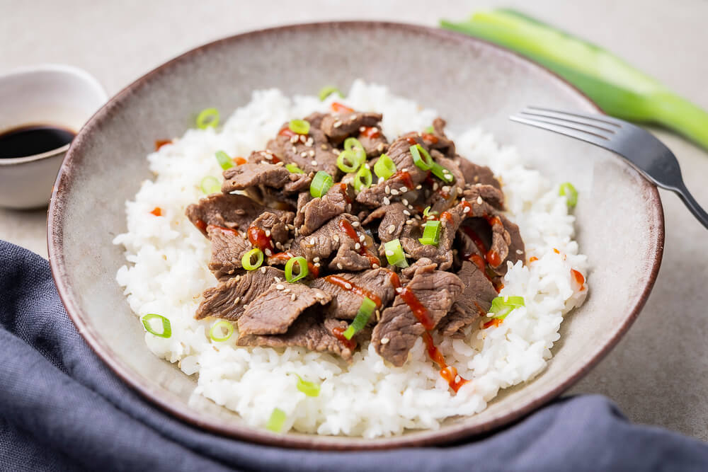
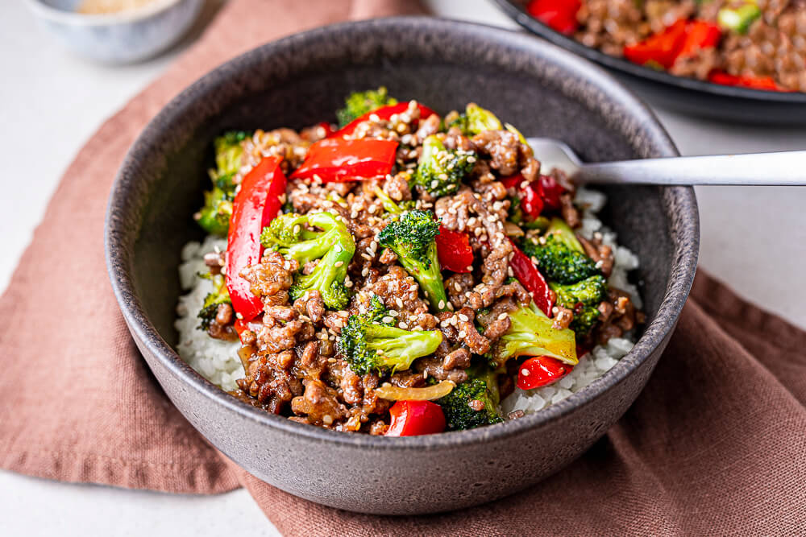
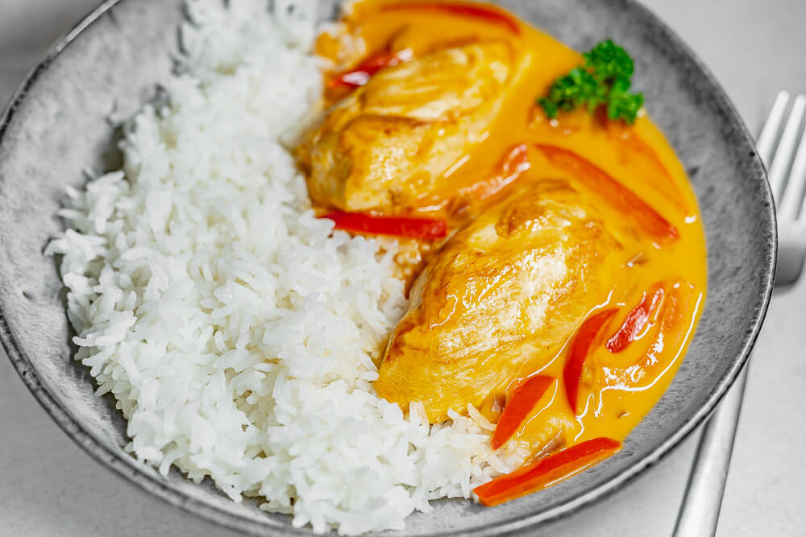
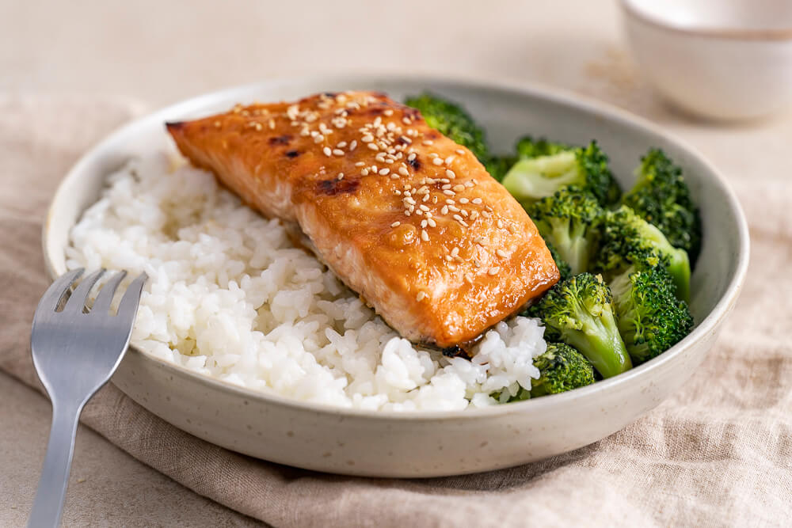

Ernährung
Cut (Gewicht abnahme)
Was ist Cutting
Du hast den Begriff „Cutting“ vielleicht schon mal im Fitnessstudio gehört. Aber was bedeutet er? Cutting ist nichts anderes als die Senkung deines Fettanteils, indem du dich an einen strengen Diätplan hältst. Dadurch wird deine Muskelmasse besser sichtbar. Der Unterschied zwischen Cutting und einer normalen Diät ist, dass du bei einer normalen Diät oft Muskelmasse verlierst. Beim Cutting passt du deine Ernährung so an, dass der Verlust an Muskelmasse minimal ist.
Kaloriendefizit
Damit du erfolgreich abnehmen kannst, musst du deine Energiezufuhr reduzieren. Wenn du weniger Kalorien zu dir nimmst, als dein Körper verbraucht, wird dein Körper Fett verbrennen. Wenn du über einen längeren Zeitraum ein Kaloriendefizit hast, wird immer etwas Muskelmasse verloren gehen. Es ist wichtig, deine Energiezufuhr so zu regulieren, dass dieser Verlust minimal ist. Um das zu erreichen, musst du genau auf deine Nahrungsaufnahme achten.
Was du beim Cutting essen solltest?
Es ist wichtig, dass du viel Eiweiß isst. Proteine sorgen
dafür, dass deine Muskelmasse erhalten bleibt. Fette und
Kohlenhydrate werden hauptsächlich zur Energiegewinnung
benötigt. An Tagen, an denen du trainierst, brauchst du
mehr Kohlenhydrate als an Ruhetagen. Es geht darum, ein
gutes Gleichgewicht zu finden. Eine abwechslungsreiche
Ernährung, bei der die verschiedenen Nahrungsquellen in
einem ausgewogenen Verhältnis zueinander stehen.
In der Cutting Phase solltest du gesunde, unverarbeitete
Lebensmittel und Lebensmittel mit hoher Nährstoffdichte
essen. Sie sorgen dafür, dass du dich satt fühlst, weil
du mehr von diesen Lebensmitteln essen kannst, ohne deine
vorgeschriebene Kalorienmenge zu überschreiten.
Geeignete Lebensmittel beim Cutting
- Fleisch wie Hühnerfleisch, Rindfleisch, Lachs, Schweinefleisch und Lammfleisch
- Proteinpulver
- Nüsse und Samen
- Bohnen
- Avocados
- Oliven
- Vollkornprodukte wie brauner Reis und Nudeln, Hafer, Vollkornbrot, Gerste und Quinoa
- Blattgemüse
- Beeren und verschiedene Gemüsesorten
Lebensmittel, auf die man beim Cutting verzichten sollte
- Wurstware und Speck
- Zuckerhaltige Getränke wie Limonaden
- Fruchtsäfte
- Verarbeitete Lebensmittel
- Weißbrot
- Süßigkeiten
- Kekse und Kuchen
- Bier und anderer Alkohol
Cutting Rezepte
Japanische Reisbowl mit Rindfleisch
Beschreibnung
Diese japanische Rindfleisch-Bowl (auch bekannt als: Gyudon) ist in nur 30 Minuten zubereitet! Sie enthält von Natur aus viel Protein und nur wenig Fett, weshalb sie sich hervorragend für eine gesunde und fitnessgerechte Ernährung eignet. Wer es klassisch mag, kann zur japanischen Reisbowl mit Rindfleisch noch ein pochiertes Ei servieren.
Nährwrte
- Protein : 33 g
- Kohlenhydrate : 64 g
- Fett : 7 g
- kcal : 460
Zutaten
Zutaten für 1 Portion.
Denke daran, die Mengen auch in den Zubereitungsschritten entsprechend anzupassen.
- 120 g Rinderhüftsteak
- 60 g Jasminreis (ungekocht)
- 1/2 weiße Zwiebel
- 1 EL Sojasauce
- 1 EL Mirin
- 100 ml Dashi Brühe / Rinderbrühe
- 1/2 EL Agavendicksaft / Honig
- ggfs. Sriracha-Sauce (optional)
Zubereitungsschritten
in 30 min
- Erhitze eine beschichtete Pfanne auf höherer Stufe und einen kleinen Topf voll Wasser.
- Schäle und schneide die Zwiebel in Streifen in dünste sie in der Pfanne mit etwas Wasser glasig.
- Koche parallel den Reis nach Packungsanleitung.
- Schneide das Fleisch in dünne Streifen und brate es für wenige Minuten mit in der Pfanne an.
- Lösche das Ganze mit Brühe, Sojasauce und Mirin und lass es weitere 10 Minuten gar köcheln.
- Sobald die Flüssigkeit weitestgehend verkocht ist, zusammen mit dem Reis servieren.
Low Carb Hackfleisch-Pfanne
Beschreibnung
Diese leckere Hackfleisch-Brokkoli-Pfanne ist nur in 25 Minuten zubereitet und enthält nicht nur wenig Kohlenhydrate und kaum Fett, sondern auch viel Protein! Serviert wird die Low Carb Hackfleischpfanne mit fertigem (oder auch selbst gemachten) Low Carb Reis aus Blumenkohl. Das schnelle und kalorienarme Low Carb Rezept lässt sich außerdem ganz einfach in größeren Mengen vorkochen.
Nährwrte
- Protein : 33 g
- Kohlenhydrate : 16 g
- Fett : 5 g
- kcal : 252
Zutaten
Zutaten für 1 Portion.
Denke daran, die Mengen auch in den Zubereitungsschritten entsprechend anzupassen.
- 125 g Rinderhackfleisch / Tatar
- 75 g Brokkoli
- 1/4 weiße Zwiebel
- 1/4 rote Paprika
- 60 ml Rinderbrühe
- 15 ml Sojasauce
- 1 EL Erythrit in Puderform
- 1/2 EL Honig (zuckerfrei)
- 1/2 Knoblauchzehe
- 1/2 Knoblauchzehe
- 1/4 EL Speisestärke
Zubereitungsschritten
in 30 min
- Erhitze eine beschichtete Pfanne auf höherer Stufe und wasche das Gemüse.
- Zerteile den Brokkoli in kleine Röschen, schneide die Paprika in Streifen und die Zwiebel in kleine Würfel.
- Röste den Brokkoli für ein paar Minuten in der heißen Pfanne und hacke derweil den Knoblauch und den Ingwer.
- Hole den Brokkoli wieder aus der Pfanne, dünste Zwiebeln, Knoblauch und Ingwer an und gib nach ein paar Minuten das Hackfleisch hinzu.
- Füge nach weiteren 5 Minuten die Paprika bei und ein wenig später den zuvor gerösteten Brokkoli.
- Rühre derweil die Sauce aus allen übrigen Zutaten an und gib diese anschließend mit in die Pfanne.
- Erhitze parallel den Low Carb Reis aus Blumenkohl in einer separaten Pfanne.
- Nach 5-10 Minuten Köcheln auf mittlerer Stufe ist die Hackfleisch Brokkoli Pfanne fertig!
Bulk (Zunehmen)
Was ist Bulking
Bulking ist eine Phase des Bodybuilings. Bodybuilding ist sowohl ein Freizeit- als auch ein Wettkampfsport, bei dem es auf Muskelgröße und -definition ankommt.Die Hauptphasen des Bodybuildings sind Bulking und Cutting. Bei Wettkampfbodybuildern kann die Vorbereitung auf ihre Wettkämpfe als weitere Phase betrachtet werden.Bulking ist die Phase des Muskelaufbaus. In dieser Phase nehmen sie absichtlich mehr Kalorien zu sich, als Ihr Körper für einen bestimmten Zeitraum (ca. 4-6 Monate) benötigt. Diese zusätzlichen Kalorien versorgen ihren Körper mit der Energie, um die Muskelgröße und -kraft beim Krafttraining zu steigern. In unterschiedlichem Ausmaß neigt der Körper während des Bulkings dazu, aufgrund der übermäßigen Kalorienzufuhr, Fett anzusammeln. Bei Bodybuildern folgt darauf oft eine Phase des "Abnehmens", in der man weniger Kalorien zu sich nimmt, um Fettmasse zu verlieren und den Anteil der fettfreien Masse zu erhöhen.
Kalorien beim Bulking
Experten empfehlen, in der Bulkingphase 10-20% mehr Kalorien zu konsumieren, als du zur Erhaltung deines Körpergewichts brauchst, um durchschnittlich 0,25-0,5% deines Körpergewichts pro Woche zuzunehmen. Wenn du zum Beispiel 3.000 Kalorien pro Tag brauchst, um dein Gewicht zu halten, solltest du stattdessen 3.300-3.600 Kalorien zu dir nehmen. Für eine Person, die 80 kg wiegt, entspricht das einer Gewichtszunahme von 0,2-0,4 kg pro Woche. Während Bodybuilding-Neulinge, die 6 Monate oder weniger Erfahrung im Krafttraining haben, das obere Ende dieses Kalorienbereichs anstreben sollten, sollten Bodybuilder mit mehreren Jahren Erfahrung das untere Ende anstreben, um die Zunahme des Körperfetts zu begrenzen.Wenn du weniger oder mehr als 0,25-0,5% deines Körpergewichts pro Woche zunimmst, solltest du deine Kalorienzufuhr entsprechend anpassen.
Ist Bulking gesund?
Viele Menschen sehen Bulking als ungesund an, weil es die Fettmasse erhöhen kann, vor allem wenn der Kalorienüberschuss zu hoch ist. Manche Bodybuilder neigen dazu, in der Bulking-Phase kalorienreiche und nährstoffarme Lebensmittel zu essen, die in der Abnehmphase normalerweise nicht verzehrt werden, wie Süßigkeiten, Desserts und frittierte Speisen. Diese Lebensmittel können, vor allem wenn sie als Teil einer kalorienreichen Ernährung verzehrt werden, Entzündungsmarker erhöhen, die Insulinresistenz fördern und den Fettgehalt im Blut steigern. Richtiges Bulking bedeutet jedoch nicht, dass man sich extrem überfressen oder jedem Verlangen freien Lauf lassen muss. Es kann auf gesunde Weise erfolgen, wenn du einen angemessenen Kalorienüberschuss beibehältst und dich auf den Verzehr nährstoffreicher Lebensmittel konzentrierst. Diese Lebensmittel enthalten im Verhältnis zu ihrer Kalorienzahl eine große Menge an Nährstoffen. Vergiss nicht, dass auf das Bulking auch eine Cutting-Phase folgen sollte, um deinen Fettanteil zu reduzieren.
Geeignete Lebensmittel beim Bulking
- Obst: Äpfel, Avocado, Bananen, Beeren, Trauben, Kiwi, Orangen, Birnen, Ananas und Granatäpfel
- Gemüse: Spargel, Rucola, Rote Bete, Brokkoli, Karotten, Mangold, Gurken, Grünkohl, Pilze und Paprika
- Stärkehaltiges Gemüse: Pfeilwurz, Erbsen, Kartoffeln, Steckrüben und Süßkartoffeln
- Körner: Brot, Müsli, Mais, Haferflocken, Popcorn, Quinoa und Reis
- Meeresfrüchte: Kabeljau, Krabben, Hummer, Lachs, Jakobsmuscheln, Garnelen, Tilapia und Thunfisch
- Milchprodukte: Butter, Hüttenkäse, Käse, Milch und Joghurt
- Fleisch, Geflügel und Eier: Rinderhackfleisch, Rindersteak, Schweinefilet, Hähnchen ohne Haut, Lendensteak, Truthahn und ganze Eier
- Hülsenfrüchte: Schwarze Bohnen, Kichererbsen, Linsen, Limabohnen und Pinto-Bohnen
- Nüsse und Samen: Mandeln, Chiasamen, Leinsamen, Sonnenblumenkerne und Walnüsse
- Öle und Nussbutter: Mandel- und Erdnussbutter, sowie Avocado-, Raps- und Olivenöl
- Getränke ohne Zuckerzusatz: Kaffee, Diätlimonade, ungesüßter Tee und Wasser
- Getränke mit Zuckerzusatz, wie gesüßter Kaffee, Tee oder normale Limonade, können in Maßen genossen werden.
Lebensmittel, auf die man beim Bulking verzichten sollte
- Alkohol beeinträchtigt die Fähigkeit deines Körpers, Muskeln aufzubauen, besonders wenn er im Übermaß getrunken wird.
- Zuckerzusatz, der häufig in Süßigkeiten, Desserts und zuckergesüßten Getränken vorkommt, wird mit verschiedenen negativen Auswirkungen auf die Gesundheit in Verbindung gebracht, wenn er im Übermaß verzehrt wird.
- Frittierte Lebensmittel. Regelmäßiger Verzehr von frittierten Lebensmitteln kann das Risiko für Herzkrankheiten und Typ-2-Diabetes erhöhen. Zu den frittierten Lebensmitteln gehören Brathähnchen, Zwiebelringe, Cheese Curds und Fish and Chips.
Bulking Rezepte
Schnelles Paprika-Hähnchen mit Reis
Beschreibnung
Das zarte Hähnchenbrustfilet in leckerer Paprikasauce ist schnell zubereitet und eignet sich besonders zum Vorkochen! Für eine kohlenhydratearme Variante kannst Du den Reis einfach durch Low Carb Reis aus Blumenkohl ersetzen. Durch zusätzliche Gewürze wie zum Beispiel Hähnchengewürz lässt sich das Rezept weiter verfeinern.
Nährwrte
- Protein : 49 g
- Kohlenhydrate : 65 g
- Fett : 14 g
- kcal : 607
Zutaten
Zutaten für 1 Portion.
Denke daran, die Mengen auch in den Zubereitungsschritten entsprechend anzupassen.
- 200 g Hähnchenbrustfilet
- 1/2 rote Paprika
- 1/4 rote Zwiebel
- 1/2 EL Tomatenmark
- 1 TL Paprikapulver edelsüß
- 125 ml Kochsahne
- 60 g Basmatireis (ungekocht)
Zubereitungsschritten
in 20 min
- Koche den Reis nach Packungsanleitung und erhitze eine beschichtete Pfanne.
- Schneide die Paprika in Streifen und die Zwiebel in feine Würfel.
- Brate die Hähnchenfiletstücke von beiden Seiten 5-10 Minuten in der heißen Pfanne an.
- Nimm das (nicht ganz durchgebratene) Hähnchenfleisch aus der Pfanne und dünste das Gemüse.
- Gib die Kochsahne hinzu und rühre das Tomatenmark zusammen mit dem Paprikapulver unter.
- Gare das Hähnchenbrustfilet weitere 5-10 Minuten in der leicht köchelnden Sauce durch.
- Schmecke die fertige Paprikasauce noch mit Salz und Pfeffer ab und serviere!
Miso-Lachs mit Brokkoli und Reis
Beschreibnung
Dieser mit einer Mischung aus Miso Paste, Sojasauce und etwas Ahornsirup marinierte bzw. glasierte Lachs wird schnell und einfach im Backofen zubereitet. Passend dazu gibt es eine Portion Reis und etwas Brokkoli und schon hast Du eine gesunde und vollwertige Mahlzeit, welche sich wunderbar auch zum Vorkochen eignet. So einfach und doch so lecker!
Nährwrte
- Protein : 50 g
- Kohlenhydrate : 52 g
- Fett : 28 g
- kcal : 689
Zutaten
Zutaten für 1 Portion.
Denke daran, die Mengen auch in den Zubereitungsschritten entsprechend anzupassen.
- 1200 g Lachs-Filet
- 60 g Jasminreis (ungekocht)
- 150 g Brokkoli
- 1 TL Miso Paste
- 1 TL Sojasauce
- 1/2 TL Ahornsirup
Zubereitungsschritten
in 25 min
- Heize den Backofen auf 180°C Umluft vor und lege ein Backblech mit Backpapier aus.
- Wasche den Brokkoli und das Lachs-Filet und tupfe es anschließend trocknen.
- Rühre die Marinade aus der Miso Paste, der Sojasauce und dem Ahorn-Sirup an.
- Bestreiche den Lachs mit der Marinade und backe ihn ca. 20 min im Backofen.
- Schneide derweil den Brokkoli in kleine Röschen und koche diese ca. 4 min gar.
- Koche zugleich den Reis nach Packungsanleitung und serviere alles zusammen!